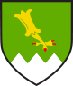
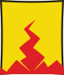

<!DOCTYPE html>
<html style="height: 100%;">

<head>
    <title>Spinelands Interactive Map</title>
    <meta name="viewport" content="width=device-width, initial-scale=1.0">
    <meta charset="UTF-8">
    <link rel="stylesheet" href="scripts/leaflet.css">
    <script src="scripts/leaflet.js"></script>
    <link rel="stylesheet" href="scripts/L.Control.Window.css" />
    <script src="scripts/L.Control.Window.js"></script>
    <link rel="stylesheet" href="scripts/leaflet.extra-markers.min.css">
    <script src="scripts/leaflet.extra-markers.min.js"></script>
    <link rel="stylesheet" href="scripts/leaflet.groupedlayercontrol.min.css">
    <script src="scripts/leaflet.groupedlayercontrol.min.js"></script>
    <link rel="stylesheet" href="https://cdn.jsdelivr.net/npm/leaflet-easybutton@2/src/easy-button.css">
    <script src="https://cdn.jsdelivr.net/npm/leaflet-easybutton@2/src/easy-button.js"></script>
    <script src="scripts/jquery-3.6.0.js"></script>
    <script src="https://kit.fontawesome.com/8275689564.js" crossorigin="anonymous"></script>
    <link rel="stylesheet" href="styles.css" />
</head>

<body style="height: 100%;margin: 0;">
    <div id="map" style="width: 100%; height: 100%; background: #fcfcfc;"></div>

    <script type="text/javascript">

        //Create Map
        var map = L.map('map', {
            minZoom: 1,
            maxZoom: 5,
            attributionControl: false,
            //I'm not sure why I'm using simple CRS but the tutorials said to do it and I want to work on content so I will revisit this later
            crs: L.CRS.Simple
        }).setView([0, 0], 2);


        //Add labels pane
        map.createPane('labels');
        map.getPane('labels').style.zIndex = 650;
        map.getPane('labels').style.pointerEvents = 'none';


        //Set bounds for the map  
        var mapSW = map.unproject([0, 8192], map.getMaxZoom()),
            mapNE = map.unproject([8192, 0], map.getMaxZoom());

        var bounds = new L.LatLngBounds(mapSW, mapNE);

        map.setMaxBounds(bounds);

        //Create layers
        var clean = L.tileLayer('maps/clean/{z}/{x}/{y}.png', {
            noWrap: true,
            bounds: bounds
        }).addTo(map);

        var grayscale = L.tileLayer('maps/grayscale/{z}/{x}/{y}.png', {
            noWrap: true,
            bounds: bounds
        });

        var territories = L.tileLayer('maps/territories/{z}/{x}/{y}.png', {
            noWrap: true,
            bounds: bounds
        });

        var labels = L.tileLayer('maps/labels/{z}/{x}/{y}.png', {
            noWrap: true,
            pane: 'labels',
            bounds: bounds
        });

        var hex = L.tileLayer('maps/hex/{z}/{x}/{y}.png', {
            noWrap: true,
            bounds: bounds
        });

        var wind_rose = L.tileLayer('maps/wind_rose/{z}/{x}/{y}.png', {
            noWrap: true,
            bounds: bounds
        });

        //Add button controls
        var infoButton = L.easyButton('fa-info', function () {
            L.control.window(map, {
                title: 'About this map',
                content: 'Click on a marker to display a popup. Some popups have a button that will display additional information',
            }).show()
        }, 'Information about the map');

        var githubButton = L.easyButton('fa-github', function () {
            window.open("https://github.com/gordongessler/spinelands-map");
        }, 'Source code on GitHub');

        L.easyBar([infoButton, githubButton]).addTo(map);

        //Add coordinate finding marker 
        var locationFinder = L.marker([-130.25, 124.5], {
            draggable: true
        }).addTo(map);
        locationFinder.bindPopup("Drag me to find coordinates").openPopup();
        locationFinder.on('dragend', function (e) {
            locationFinder.getPopup().setContent('LatLng: ' + locationFinder.getLatLng().toString() + '<br />'
                + 'Pixels: ' + map.project(locationFinder.getLatLng(), map.getMaxZoom()).toString()).openOn(map);
        });

        //Create icons

        //Zir
        var zirIcon = L.icon({
            iconUrl: 'images/Zir.png',

            iconSize: [81, 85],
            iconAnchor: [20, 85],
            popupAnchor: [20, -85],
            tooltipAnchor: [20, -40]
        });

        var zirCityMarker = L.ExtraMarkers.icon({
            icon: 'fa-fort-awesome',
            markerColor: 'orange',
            shape: 'penta',
            prefix: 'fa'
        });

        var zirTownMarker = L.ExtraMarkers.icon({
            icon: 'fa-home',
            markerColor: 'orange',
            shape: 'circle',
            prefix: 'fa'
        });


        //Bogmire
        var bogmireIcon = L.icon({
            iconUrl: 'images/Bogmire.png',

            iconSize: [81, 81],
            iconAnchor: [20, 81],
            popupAnchor: [20, -81],
            tooltipAnchor: [20, -40]
        });

        var bogmireCityMarker = L.ExtraMarkers.icon({
            icon: 'fa-fort-awesome',
            markerColor: 'white',
            iconColor: 'black',
            shape: 'penta',
            prefix: 'fa'
        });

        var bogmireTownMarker = L.ExtraMarkers.icon({
            icon: 'fa-home',
            markerColor: 'white',
            iconColor: 'black',
            shape: 'circle',
            prefix: 'fa'
        });

        //Ardenia
        var ardeniaIcon = L.icon({
            iconUrl: 'images/Ardenia.png',

            iconSize: [81, 95],
            iconAnchor: [20, 95],
            popupAnchor: [20, -95],
            tooltipAnchor: [20, -40]
        });

        var ardeniaCityMarker = L.ExtraMarkers.icon({
            icon: 'fa-fort-awesome',
            markerColor: 'yellow',
            shape: 'penta',
            prefix: 'fa'
        });

        var ardeniaTownMarker = L.ExtraMarkers.icon({
            icon: 'fa-home',
            markerColor: 'yellow',
            shape: 'circle',
            prefix: 'fa'
        });

        //Haldrim
        var haldrimIcon = L.icon({
            iconUrl: 'images/Haldrim.png',

            iconSize: [81, 95],
            iconAnchor: [20, 95],
            popupAnchor: [20, -95],
            tooltipAnchor: [20, -40]
        });

        var haldrimCityMarker = L.ExtraMarkers.icon({
            icon: 'fa-fort-awesome',
            markerColor: 'blue-dark',
            shape: 'penta',
            prefix: 'fa'
        });

        var haldrimTownMarker = L.ExtraMarkers.icon({
            icon: 'fa-home',
            markerColor: 'blue-dark',
            shape: 'circle',
            prefix: 'fa'
        });

        //Cardous
        var cardusIcon = L.icon({
            iconUrl: 'images/Cardus.png',

            iconSize: [81, 95],
            iconAnchor: [20, 95],
            popupAnchor: [20, -95],
            tooltipAnchor: [20, -40]
        });

        var cardusCityMarker = L.ExtraMarkers.icon({
            icon: 'fa-fort-awesome',
            markerColor: 'green',
            shape: 'penta',
            prefix: 'fa'
        });

        var cardusTownMarker = L.ExtraMarkers.icon({
            icon: 'fa-home',
            markerColor: 'green',
            shape: 'circle',
            prefix: 'fa'
        });

        //Scale Valley
        var scaleValleyIcon = L.icon({
            iconUrl: 'images/ScaleValley.png',

            iconSize: [81, 81],
            iconAnchor: [20, 81],
            popupAnchor: [20, -81],
            tooltipAnchor: [20, -40]
        });

        //Korrim
        var korrimIcon = L.icon({
            iconUrl: 'images/Korrim.png',

            iconSize: [81, 101],
            iconAnchor: [20, 101],
            popupAnchor: [20, -101],
            tooltipAnchor: [20, -40]
        });

        //Urshok
        var urshokIcon = L.icon({
            iconUrl: 'images/Urshok.png',

            iconSize: [81, 95],
            iconAnchor: [20, 95],
            popupAnchor: [20, -95],
            tooltipAnchor: [20, -40]
        });

        //Add markers and assing popups and tooltips
        //Create marker groups
        var cities = L.layerGroup();
        var towns = L.layerGroup();
        var heraldry = L.layerGroup();

        //Zir        
        var zir_zir = L.marker(map.unproject([2060, 1224], map.getMaxZoom()), { icon: zirIcon }).addTo(heraldry)
            .bindTooltip("Zir")
            .on('click', function () {
                var win = L.control.window(map, {
                    title: 'Zir',
                    content: '<br />The Ziranthian dragonborn arrived in the desert as slaves, revolted against their opressors, and have established a advanced and erudite society. This tale of triumph is carried proudly in the in the heart of every dragonborn. Zir is protected by the Glass Dragons, knights clad in dragonglass armour, who vow to uphold the freedom and independence of the Zirantian people.They serve as guards to the city and towns, and patrol the distant borders of the desert.They guard the borders of the the Scale Valley especially well, watching closely for any hint that their Yuan- ti oppressors would return to enact their revenge.The Glass Dragons are trained in a secret monastery at the shores of Lake Memnor, high in the upper reaches of the Northern Spine.Here they commune in their dreams with their great liberator Brethezriass, the dragon who once delivered their people from slavery.Many young dragonborn travel to the town of Teghad in the hopes that they would be chosen to become Glass Dragons, and taken to the Lake Memnor.'
                }).show()
            });

        var zir_ziris = L.marker(map.unproject([2541, 912], map.getMaxZoom()), { icon: zirCityMarker }).addTo(cities)
            .bindPopup("<b>Ziris</b><br /> The capital city of Zir. Ruled by the council of seven. Home to the Clarion Archives<button id='ziris'>Read more...</a>")
            .bindTooltip("Ziris");

        var zir_kharzim = L.marker(map.unproject([1985, 566], map.getMaxZoom()), { icon: zirTownMarker }).addTo(towns)
            .bindPopup("Kharzim")
            .bindTooltip("Kharzim");

        var zir_rezma = L.marker(map.unproject([1919, 1474], map.getMaxZoom()), { icon: zirTownMarker }).addTo(towns)
            .bindPopup("Rezma")
            .bindTooltip("Rezma");

        var zir_kelrix = L.marker(map.unproject([3272, 1341], map.getMaxZoom()), { icon: zirTownMarker }).addTo(towns)
            .bindPopup("Kelrix")
            .bindTooltip("Kelrix");

        var zir_garut = L.marker(map.unproject([2898, 456], map.getMaxZoom()), { icon: zirTownMarker }).addTo(towns)
            .bindPopup("Garut")
            .bindTooltip("Garut");

        var zir_teghad = L.marker(map.unproject([4188, 1123], map.getMaxZoom()), { icon: zirTownMarker }).addTo(towns)
            .bindPopup("Teghad")
            .bindTooltip("Teghad");

        //Bogmire        
        var bogmire_bogmire = L.marker(map.unproject([5556, 1808], map.getMaxZoom()), { icon: bogmireIcon }).addTo(heraldry)
            .bindTooltip("Bogmire")
            .on('click', function () {
                var win = L.control.window(map, {
                    title: 'Bogmire',
                    content: '<br />'
                }).show()
            });

        var bogmire_bobbernet = L.marker(map.unproject([5617, 1397], map.getMaxZoom()), { icon: bogmireCityMarker }).addTo(cities)
            .bindPopup("<b>Bobbernet</b><br /> The capital city of Bogmire.") /*Ruled by the council of seven. Home to the Clarion Archives<button id='ziris'>Read more...</a>");
            */
            .bindTooltip("Bobbernet");

        //Ardenia        
        var ardenia_ardenia = L.marker(map.unproject([4672, 2324], map.getMaxZoom()), { icon: ardeniaIcon }).addTo(heraldry)
            .bindTooltip("Ardenia")
            .on('click', function () {
                var win = L.control.window(map, {
                    title: 'Ardenia',
                    content: '<br />'
                }).show()
            });

        var ardenia_ardenfort = L.marker(map.unproject([4819, 1803], map.getMaxZoom()), { icon: ardeniaCityMarker }).addTo(cities)
            .bindPopup("Ardenfort")
            .bindTooltip("Ardenfort");

        var ardenia_castor = L.marker(map.unproject([5177, 1723], map.getMaxZoom()), { icon: ardeniaTownMarker }).addTo(towns)
            .bindPopup("Castor")
            .bindTooltip("Castor");

        var ardenia_oakshadow = L.marker(map.unproject([4628, 2018], map.getMaxZoom()), { icon: ardeniaTownMarker }).addTo(towns)
            .bindPopup("Oakshadow")
            .bindTooltip("Oakshadow");

        var ardenia_fallworth = L.marker(map.unproject([4371, 2152], map.getMaxZoom()), { icon: ardeniaTownMarker }).addTo(towns)
            .bindPopup("Fallworth")
            .bindTooltip("Fallworth");

        var ardenia_mistwater = L.marker(map.unproject([3942, 1849], map.getMaxZoom()), { icon: ardeniaTownMarker }).addTo(towns)
            .bindPopup("Mistwater")
            .bindTooltip("Mistwater");

        var ardenia_greenrest = L.marker(map.unproject([4981, 2316], map.getMaxZoom()), { icon: ardeniaTownMarker }).addTo(towns)
            .bindPopup("Greenrest")
            .bindTooltip("Greenrest");

        //Haldrim
        var haldrim_haldrim = L.marker(map.unproject([4397, 4009], map.getMaxZoom()), { icon: haldrimIcon }).addTo(heraldry)
            .bindTooltip("Haldrim")
            .on('click', function () {
                var win = L.control.window(map, {
                    title: 'Haldrim',
                    content: '<br />'
                }).show()
            });

        var haldrim_greykeep = L.marker(map.unproject([4859, 3605], map.getMaxZoom()), { icon: haldrimCityMarker }).addTo(cities)
            .bindPopup("Grey Keep")
            .bindTooltip("Grey Keep");

        var haldrim_stolver = L.marker(map.unproject([4946, 3888], map.getMaxZoom()), { icon: haldrimTownMarker }).addTo(towns)
            .bindPopup("Stolver")
            .bindTooltip("Stolver");

        var haldrim_pallem = L.marker(map.unproject([4416, 4293], map.getMaxZoom()), { icon: haldrimTownMarker }).addTo(towns)
            .bindPopup("Pallem")
            .bindTooltip("Pallem");

        var haldrim_riverhold = L.marker(map.unproject([3974, 3672], map.getMaxZoom()), { icon: haldrimTownMarker }).addTo(towns)
            .bindPopup("Riverhold")
            .bindTooltip("Riverhold");

        var haldrim_havenmoor = L.marker(map.unproject([4773, 3246], map.getMaxZoom()), { icon: haldrimTownMarker }).addTo(towns)
            .bindPopup("Havenmoor")
            .bindTooltip("Havenmoor");

        var haldrim_traunch = L.marker(map.unproject([5242, 3426], map.getMaxZoom()), { icon: haldrimTownMarker }).addTo(towns)
            .bindPopup("Traunch")
            .bindTooltip("Traunch");

        //Cardus
        var cardus_cardus = L.marker(map.unproject([3542, 2766], map.getMaxZoom()), { icon: cardusIcon }).addTo(heraldry)
            .bindTooltip("Cardus")
            .on('click', function () {
                var win = L.control.window(map, {
                    title: 'Cardus',
                    content: '<br />'
                }).show()
            });

        var cardus_sparrowrest = L.marker(map.unproject([3638, 3429], map.getMaxZoom()), { icon: cardusCityMarker }).addTo(cities)
            .bindPopup("Sparrowrest")
            .bindTooltip("Sparrowrest");

        var cardus_waldren = L.marker(map.unproject([3730, 3887], map.getMaxZoom()), { icon: cardusTownMarker }).addTo(towns)
            .bindPopup("Waldren")
            .bindTooltip("Waldren");

        var cardus_keys = L.marker(map.unproject([3863, 3330], map.getMaxZoom()), { icon: cardusTownMarker }).addTo(towns)
            .bindPopup("Keys")
            .bindTooltip("Keys");

        var cardus_bridle = L.marker(map.unproject([3164, 3351], map.getMaxZoom()), { icon: cardusTownMarker }).addTo(towns)
            .bindPopup("Bridle")
            .bindTooltip("Bridle");

        var cardus_orton = L.marker(map.unproject([3795, 2872], map.getMaxZoom()), { icon: cardusTownMarker }).addTo(towns)
            .bindPopup("Orton")
            .bindTooltip("Orton");

        //Scale Valley
        var scale_valley = L.marker(map.unproject([2888, 1908], map.getMaxZoom()), { icon: scaleValleyIcon }).addTo(heraldry)
            .bindTooltip("Scale Valley")
            .on('click', function () {
                var win = L.control.window(map, {
                    title: 'Scale Valley',
                    content: '<br />'
                }).show()
            });

        //Korrim
        var korrim_korrim = L.marker(map.unproject([4446, 1379], map.getMaxZoom()), { icon: korrimIcon }).addTo(heraldry)
            .bindTooltip("Korrim")
            .on('click', function () {
                var win = L.control.window(map, {
                    title: 'Korrim',
                    content: '<br />'
                }).show()
            });

        //Urshok        
        var urshok_urshok = L.marker(map.unproject([5226, 2832], map.getMaxZoom()), { icon: urshokIcon }).addTo(heraldry)
            .bindTooltip("Urshok")
            .on('click', function () {
                var win = L.control.window(map, {
                    title: 'Urshok',
                    content: '<br />'
                }).show()
            });

        //Create windows with content for some markers
        //This feels hacky and I don't like it. It works so far but I will probably replace it if I figure out how.
        map.on('popupopen', function () {
            //Ziris
            $('#ziris').click(function () {

                var win = L.control.window(map, {
                    maxWidth: 400,
                    title: 'The great glass city of Ziris',
                    content: 'The great glass city of Ziris, Jewel of the Desert, is the seat of the Council of Seven, the ruling organisation of Zir. The Council is made up of the seven wisest and most powerful wizards in Zir, and they rule the desert nation on principles of rationality and knowledge. Ziris is home to the Clarion Archives, rumoured to be the greatest library in the civilised world. The Council holds that this library is to be the definitive repository of all that is known. Legions of scribes and scholars work tirelessly to asymptotically converge upon this noble objective. Recently the Council has ruled allow outsiders to contribute to the Archives by constructing Obsidian Lyceums in other nations, places of research and instruction in Ziranthian arcanism.'
                }).show()

            });
        });

        //Create layer groups
        var baseLayers = {
            "Grayscale": grayscale,
            "Clean": clean
        };
        var groupedOverlays = {
            "Map overlays": {
                "Hex overlay": hex,
                "Wind Rose": wind_rose,
            },
            "Political": {
                "Heraldry": heraldry,
                "Territories": territories,
                "Labels": labels,
            },
            "Points of Interest": {
                "Cities": cities,
                "Towns": towns,
            }
        };
        //Display marker groups
        cities.addTo(map);

        //Add Grouped Layers Control
        L.control.groupedLayers(baseLayers, groupedOverlays, {
            //exclusiveGroups: ["Map overlays"],
            //groupCheckboxes: true
        }).addTo(map);

    </script>
</body>

</html>